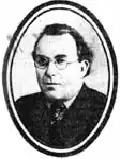

Абрам КАГАН
Каган Абрам Якович народився в місті Бердичів 27 грудня 1900 року в сім'ї дрібного крамаря. Закінчив місцеве комерційне училище, після чого тривалий час учителював у трудових школах. Водночас співробітничав у єврейських періодичних виданнях, зокрема в газеті "Ейнікайт".
Друкуватися почав 1922 року після того, як переїхав до Харкова. Першу книжечку віршів видав 1923 року. Після цього писав лише прозу. Окремими виданнями вийшли збірки новел "Свиня", "Уламки", "Оповідання". Деякі його твори були перекладені українською мовою. А. Каган — автор романів "Енергія", "Арн Ліберман", "Шолом Алейхем" та ін. Коли почалася Велика Вітчизняна війна, евакуювався до Башкирії, після перемоги повернувся до Києва. А. Каган був заарештований у січні 1949 року за тими ж звинуваченнями, які приписувалися тоді багатьом єврейським письменникам. Був засуджений на 15 років спецтаборів. Реабілітований 9 січня 1956 року. Помер 17 грудня 1965 року. Григорій Полянкер ЛУ 34 (4443) 22.08.1991